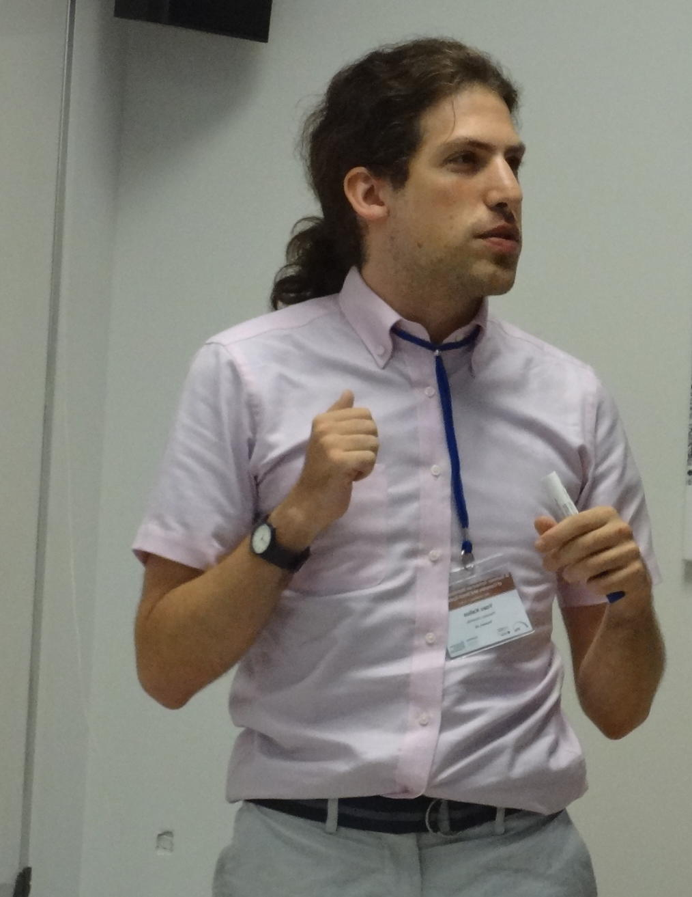

Yoav Kallus
 Until 2017, I was an Omidyar Fellow at the Santa Fe Institute in Santa Fe, New Mexico. My research was in statistical physics, disordered, nonlinear, and adaptive systems, discrete geometry, packing problems, and soft matter. As of 2017, I am a quantitative research associate at Susquehanna International Group.
email: Yoav.Kallus@gmail.com
twitter: @ykallus
mastodon: ykallus@mathstodon.xyz
skype: yoav_kallus